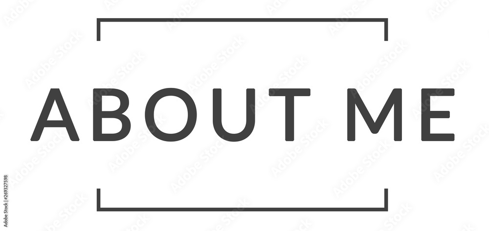

Hello! I'm a passionate web developer with a strong interest in creating interactive and user-friendly websites. I have been working in the field for several years, constantly learning and adapting to new technologies.
My journey in web development began when I was in college, where I first discovered my love for coding and problem-solving. Since then, I've worked on numerous projects that have helped me grow both technically and creatively.
I specialize in front-end development but also have experience with back-end technologies. My goal is to create web experiences that are not only visually appealing but also highly functional and accessible to all users.
When I'm not coding, you can find me participating in hackathons, contributing to open-source projects, or mentoring aspiring developers in my community.
Outside of web development, I have several hobbies that keep me engaged and creative:
I'm particularly passionate about landscape photography and often combine it with my hiking trips. Capturing beautiful moments in nature helps me appreciate the world around me and brings balance to my tech-focused life.
Music is another creative outlet for me. I've been playing guitar since I was a teenager and recently started learning piano. I find that music and coding share similar patterns of creativity and problem-solving.
My professional and personal goals include:
In the next five years, I aim to become a full-stack developer with expertise in both front-end and back-end technologies. I want to work on projects that have a positive impact on society, particularly in education and environmental conservation.
I also plan to start a tech blog to share my knowledge with the developer community and possibly create online courses to help beginners start their coding journey.